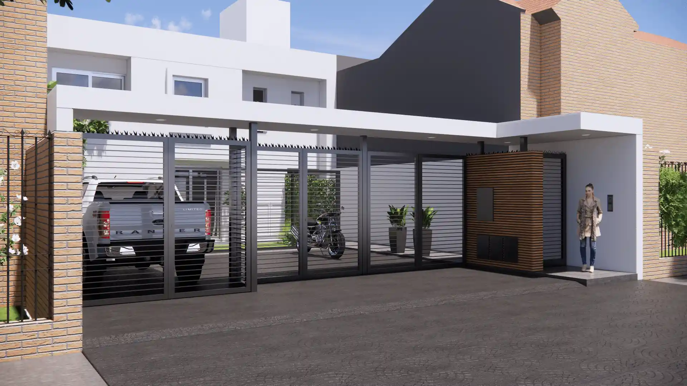

Proyecto de vivienda Duplex de Sofía Bustamante
Ubicación
Barrio: Nuevo Sol, Neuquen Capital.
Descripción
Conjunto de viviendas en Duplex para cuatro familias.
Arquitectura
Diseño arquitectónico minimalista.
Barrio: Nuevo Sol, Neuquen Capital.
Conjunto de viviendas en Duplex para cuatro familias.
Diseño arquitectónico minimalista.
Barrio: Club de Campo el Algarrobo, Ciudad de Córdoba.
Casa de campo de perímetro libre con visuales a todo el parque.
Arquitectura de formas símples con el uso de materiales de la zona, como las piedras lajas de los cerros.
Centro de Salta Capital
Nuevo local para la cadena de peluquería Guappas, para brindar un servicio premium a la belleza femenina.
Se utilizó el lenguaje clásico Frances para lograr una fachada academicista.
Barrio: Triunfo, San Salvador de Jujuy.
Diseño sóbrio de vivienda con cuatro habitaciones incluido el garage frontal para dos vehiculos.
Arquitectura moderna, en el interior; estilo industrial.